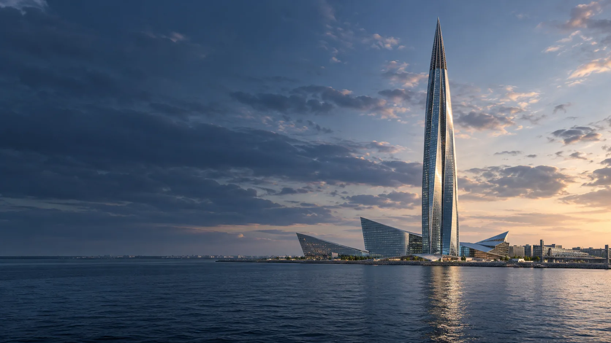

Молодёжное пространство
На Королёва
пр. Королёва, д. 32, корп. 1, лит. Б
Смотреть площадку
Молодёжные площадки района
Молодёжные пространства Дома молодёжи Приморского района. Выбери адрес и интересное направление.
Смотреть площадкиКаталог района
Ищи по названию, адресу или направлению.
Показано 13 площадок
Загружаем карту клубов…
Предварительные координаты: © OpenStreetMap contributors.
пр. Королёва, д. 32, корп. 1, лит. Б
Смотреть площадкуул. Школьная, д. 17
Смотреть площадкуул. Мебельная, д. 25, корп. 1, пом. 27-Н
Смотреть клубБогатырский пр., д. 44
Смотреть площадкуул. Туристская, д. 11, корп. 1
Смотреть клубул. Мебельная, д. 25, корп. 1, пом. 26-Н
Смотреть клубКомендантский пр., д. 39, корп. 1
Смотреть клубул. Торжковская, д. 24, корп. 2
Смотреть клубул. Савушкина, д. 37
Смотреть клубКомендантский пр., д. 51, корп. 1
Смотреть клубпр. Авиаконструкторов, д. 16, корп. 1
Смотреть площадкуНижне-Каменская ул., д. 26, стр. 1
Смотреть площадкуЛанское ш., д. 24, корп. 5
Смотреть клубПодходящих площадок не найдено. Попробуй другой запрос.
Связаться с учреждением
Контакты учреждения
пр. Королёва, д. 32, корп. 1, лит. Б
Перед посещением
Для участников от 14 до 35 лет.
Проверь дни, время и наличие мест.
Узнай, как присоединиться.
Актуальный перечень из 13 филиалов и контакты сверены по сайту Дома молодёжи и странице контактов. Примеры бесплатных направлений взяты из городского документа от 01.06.2026. В нём больше старых площадок, поэтому список сверён с сайтом учреждения. Отдельные направления могли измениться.